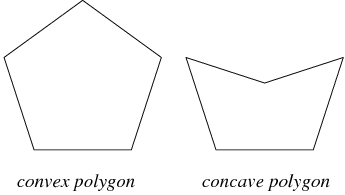

Welcome to the Straight Skeleton Generator. Using this application,
you will be able to draw a polygon on the canvas by clicking your mouse to create a straight skeleton, which is a diagram
showing the topological characteristics of a polygon. For more information regarding straight skeletons, we recommend
reading the following paper on the subject: Link
Click points along the canvas to create the edges of your polygon. It will
begin to fill as you draw it. You may choose to undo the last point drawn on the
canvas or to clear it entirely. When you are satisfied with your polygon, click the Generate button or right click to draw the final point and close the polygon.
Please note that this application requires that the polygon be convex, meaning all of its interior angles are less than 180 degrees. You will be notified if the polygon you are drawing is invalid.
